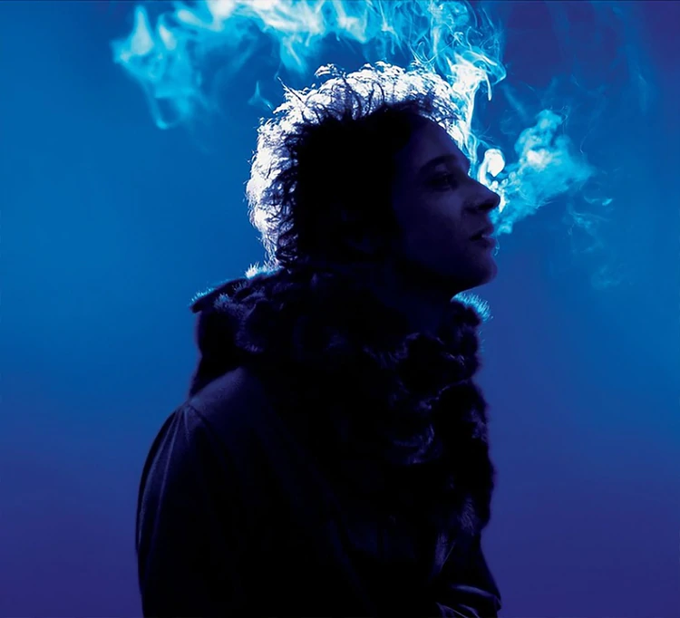

Bocanada
 Un álbum de una profunda raíz electrónica, con elementos de rock alternativo, dream pop, neopsicodelia y algunos trazos experimentales. Cerati así lo pensó el álbum como una sola pieza, en la que canciones no son individuales. Hay tanto ritmos latinos («Tabú») como lentas piezas psicodélicas («Beautiful») y trazos de música electrónica («Paseo inmoral», «Perdonar es divino»).
Hay algunas canciones instrumentales que originalmente iban a formar parte de un supuesto lado B instrumental del disco Sueño Stereo de Soda Stereo. De las sesiones de este disco salió «FunkFarron», que terminó como parte del proyecto Roken.
Fuerza Natural
Como en todos los trabajos de Gustavo Cerati, en este álbum comparten varios géneros musicales, incluso opuestos entre sí. Además, es un vuelco casi total del sonido rockero y lleno de guitarras de su disco anterior Ahí vamos. Cerati cambia los potentes riffs y los solos de guitarra, por sonidos más melódicos, suaves y relajantes; además de canciones más cargadas al pop como los tres sencillos.
La música tiene una gran influencia del indie rock, como se oye en «Fuerza natural», «Naturaleza muerta», «He visto a Lucy»; además de indie rock mezclado con pop rock como el de los tres sencillos «Déjà vu», «Rapto» y «Magia».
También es altamente perceptible la presencia de una influencia folk, especialmente folk argentino, indie folk; además de trazos de country alternativo. Claros ejemplos son «Cactus», «Tracción a Sangre», «Fuerza natural» o la pop «Amor sin rodeos».
En baladas suaves como «Sal», «Convoy» o la pista oculta «#», aparece un suave rock alternativo mezclado con melodías pop.
Una curiosidad sobre la canción «He visto a Lucy» es que, a partir del minuto 3:37, contiene una muestra de «El parque», canción escrita por Luis Alberto Spinetta e interpretada por la banda La Pesada del Rock and Roll en su álbum Billy Bond y La Pesada del Rock and Roll de 1971.